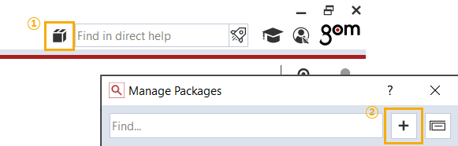
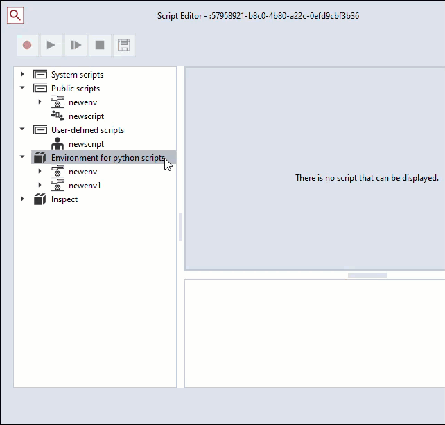
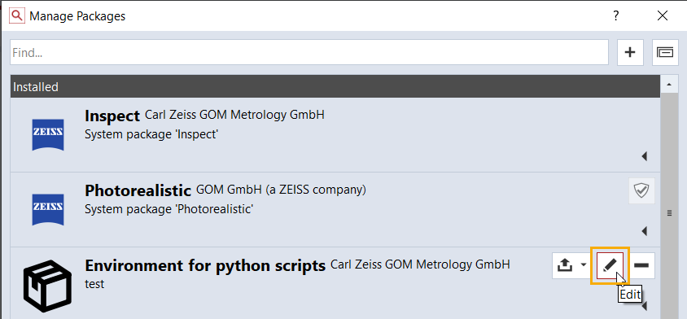
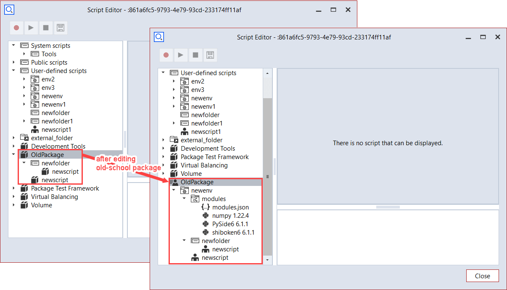

Environments for python scripts
Note
Script environments is available since software version 2022, revision 147326.
Important
New package with only scripts, which are not in environment, can not be created any more. Previous packages without environment can still be installed and executed, but can not be edited. If you want to export only scripts, please use “Export Script” (RMB on the script to export) or create a script environment and add the script in it.
Creating an environment in the script editor
RMB (or Ctrl+E) on the Public/User-defined scripts > New Environment
Each created environment contains a “modules” folder and a “modules.json” file in the “modules” folder.

Install / uninstall python packages
Installation
To install python packages to the created environment path: RMB on ①the environment folder or ②modules folder or ③modules.json file > Install Python Package

To install python packages to the public/user local path: RMB on Public/User-defined scripts > Install Python Package or old version is also valid (old version) Menu > Scripting > Script Choice > Tools > Install Python Package
The Installation can be done in two ways: network or local.
Network
The package list from network must be separated with a comma.
To install the packages of the specific version, write the version after “==”. ex) numpy==1.22.0

Local
Python wheel files (*.whl) can be added or removed.

The explorer of the script editor and “modules.json” file are updated after installation.

Uninstallation
RMB on a python package that should be removed > Uninstall Python Package
The explorer of the script editor and “modules.json” file are updated after uninstallation.

Writing and running a script in the environment
To create a script in the created environment: RMB (or Ctrl+N) on the environment folder > New Script
Scripts in a script environments can import only
installed python packages in that script environment, which are displayed in modules.json file
other scripts in that script environment
Editing “modules.json” file
“modules.json” file can be edited in the script editor.
“wheelsfrom”: “local”: When creating a package that contains this environment, all wheel files of the required python packages for this environment are packaged together. When this environment being imported, required python packages are installed from the contained wheel files. Importing of this environment can be done offline.
“wheelsfrom”: “network”: When creating a package that contains this environment, wheel files of the required python packages for this environment are NOT packaged together. When this environment being imported, required python packages are installed from network. Importing of this environment must be done online.

Creating a package that contains environments
Go to “Create Package” dialog.

When creating package, now only environments can be added instead of scripts and python modules.
More than one environment with a unique name can be packaged into a package.

Editing the package that contains only script environments
When editing package in the script editor, python packages can be installed and uninstalled in the environment.

If editing is completed, the package can be saved in package manager.


Editing the package that contains contents not in a script environment
Packages that contain contents not in a script environment are called old-school packages.
Old-school packages still exist and should be able to execute.
Old-school packages should be updated when the script contents are modified.
When editing old-school package in the script editor, all contents not in a script environment would be migrated automatically after a warning message.
The python packages contained in the old-school package would be installed in the script environment automatically, too.
Script editor

Package manager